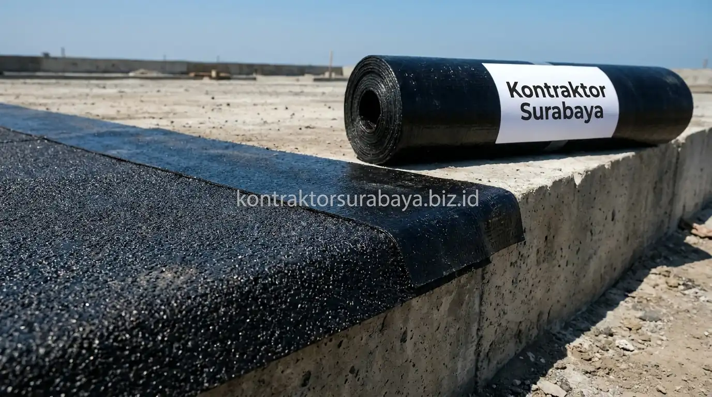

Musim hujan lebat di Surabaya kerap menjadi mimpi buruk bagi banyak pemilik hunian. Air yang menetes dari plafon gypsum, bercak jamur yang merusak cat dinding interior, hingga genangan air di dak beton jemuran sering kali terjadi berulang-ulang meski sudah berulang kali dilapisi cat waterproofing. Masalah bocor menahun ini timbul bukan karena atap tidak bisa diperbaiki, melainkan karena metode penanganan yang dilakukan selama ini hanya bersifat tambal sulam di permukaan tanpa menuntaskan akar persoalan struktur.
1. Penyebab Utama Atap dan Dak Beton Mengalami Kebocoran
Waterproofing berkualitas rendah, retak pada struktur dak, sambungan genteng yang tidak rapat, dan talang air tersumbat adalah empat penyebab paling umum kebocoran atap dan dak beton.
- Waterproofing Berkualitas Rendah: Lapisan pelindung yang tipis dan tidak tahan sinar ultraviolet cepat mengelupas dan rapuh dalam hitungan bulan di bawah terik matahari pesisir Surabaya.
- Retak Rambut hingga Retak Struktur: Pergerakan pondasi atau beban dak memicu celah mikroskopis pada beton yang menjadi jalan tol bagi rembesan air hujan.
- Sambungan Genteng & Karpusan Renggang: Plesteran karpusan semen konvensional yang retak membiarkan air menyusup langsung ke rangka kasau dan plafon.
- Talang Air Menggenang atau Tersumbat: Penumpukan daun kering dan pasir pada talang seng/cor membuat air meluap masuk ke lisplang bangunan.
2. Kenapa Waterproofing Murahan Sering Gagal Bertahan Lama?
Waterproofing dengan bahan dasar murah umumnya memiliki elastisitas rendah, sehingga mudah retak saat dak beton mengalami pemuaian dan penyusutan akibat perubahan suhu.
Dak beton secara alami mengalami pemuaian termal saat siang hari yang panas menyengat dan menyusut drastis saat malam hari atau diguyur hujan lebat tiba-tiba. Lapisan waterproofing berkualitas tinggi dirancang dengan elastisitas di atas 300% sehingga mampu melar dan menyusut mengikuti gerak mikroskopis beton tanpa sobek. Sebaliknya, produk cat waterproofing murahan yang kaku akan langsung getas, pecah-pecah seribu, dan kehilangan daya rekatnya.

3. Metode Waterproofing yang Direkomendasikan untuk Solusi Permanen
Membran bakar, coating polyurethane, integral waterproofing pada campuran beton, dan waterstop pada sambungan adalah empat metode yang direkomendasikan untuk hasil waterproofing jangka panjang.
- Membran Bakar Aspal (Torch-on Membrane): Lembaran aspal modifikasi setebal 3–4 mm yang direkatkan dengan pemanasan api las, menciptakan karpet kedap air monolitik yang sangat tahan robek dan cuaca ekstrem.
- Coating Polyurethane (PU Elastomeric): Cairan berbasis polyurethane yang membentuk lapisan karet sintetis tanpa sambungan (seamless), sangat ideal untuk dak rumit dengan banyak pipa pembuangan.
- Integral Waterproofing Admixture: Bahan aditif cair/bubuk yang dicampurkan langsung ke dalam adukan semen cor saat pengecoran dak baru untuk memblokir pori-pori kapiler beton dari dalam.
- Waterstop PVC / Swelling Bar: Strip khusus yang ditanam di pertemuan antara cor beton lama dan baru untuk menyumbat celah sambungan dingin (cold joint).
4. Langkah Perbaikan Kebocoran dari Sumber, Bukan Sekadar Menutup Gejala
Identifikasi titik rembesan, pembongkaran lapisan lama yang rusak, perbaikan retak struktur, dan aplikasi lapisan waterproofing baru adalah empat langkah utama perbaikan kebocoran yang tuntas.
Proses perbaikan yang profesional dimulai dari water leakage investigation untuk melacak jalur kapilaritas air. Selanjutnya, lapisan semen atau cat lama yang rapuh dikupas bersih hingga permukaan beton asli terlihat (chipping). Retakan beton diinjeksi dengan epoxy atau semen grouting non-shrink. Setelah media dasar benar-benar kering dan bersih, barulah diaplikasikan primer perekat serta multi-layer waterproofing yang ditutup lapisan screed pelindung.
"Menambal cat di atas dak yang sudah lembap dan retak hanya akan membuang biaya. Solusi anti bocor sejati bertumpu pada perbaikan integritas beton dan pengaliran air yang lancar."
5. Perawatan Talang dan Sistem Drainase Air Hujan
Pembersihan talang secara berkala dan kemiringan saluran air yang tepat membantu mencegah genangan yang berpotensi menjadi sumber kebocoran baru.
Dak beton horizontal wajib memiliki kemiringan (slope screed) minimal 1–2% yang mengarah tepat ke lubang saringan pembuangan (floor drain/roof drain). Pipa roof drain juga harus berdiameter memadai (minimal pipa PVC 3 atau 4 inci) serta dilengkapi saringan kawat kubah (dome grate) agar air hujan deras selebat apa pun dapat terbuang tuntas dalam hitungan detik tanpa meninggalkan genangan air berbahaya.
6. Kesalahan Umum saat Memperbaiki Kebocoran Atap yang Membuatnya Kembali Bocor
Hanya menambal titik yang terlihat, tidak mengeringkan area sebelum aplikasi ulang, memilih material yang tidak sesuai kondisi dak, dan mengabaikan retak struktur adalah empat kesalahan yang membuat kebocoran kembali terjadi.
- Menambal Hanya Titik Tetesan: Titik air menetes di plafon bawah sering kali berjarak 2–5 meter dari retakan beton utama di dak atas.
- Aplikasi di Atas Permukaan Basah: Mengoleskan cat pelapis pada beton yang masih lembap menjebak uap air di bawahnya yang akan mendidih, menggelembung, dan pecah saat terjemur matahari.
- Salah Pilih Jenis Waterproofing: Menggunakan waterproofing indoor/acrylic untuk area dak terbuka yang terus-menerus terendam air hujan.
- Mengabaikan Kerusakan Rangka Atap: Tidak mengganti reng kayu atau baja ringan yang sudah berkarat/keropos di sekitar titik rembesan.
Setiap kasus kebocoran memiliki penyebab dan kondisi struktur yang berbeda, sehingga solusi permanen memerlukan pengecekan langsung di lokasi sebelum menentukan metode perbaikan yang tepat. Pelajari cakupan layanan renovasi pada halaman jasa renovasi Surabaya, atau lihat ragam layanan lain pada halaman layanan kami.